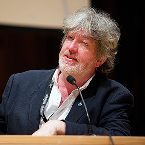

Bill Thompson on open data: 'Nothing comes from nothing'
All works of art, pieces of writing and songs are shaped from those that came before them. Can the same be said for data?

Ahead of his talks at the ODI Summit, we speak with technology critic Bill Thompson.
Bill helped set up the Guardian’s website, comments on tech issues for Focus magazine and the BBC World Service and advises arts and cultural organisations on their digital strategies. Bill shares with us what shaped his career in technology, his thoughts on the future of open data and his views from within "the liminal space between offline and online," where he lives with many of his friends.
Hi Bill. You’ve been thinking, writing and speaking about all things digital for twenty years. What first got you excited about the digital world?
The reality is that it just crept up on me. I grew up before computers appeared in people’s lives – the few computers there were could be found in special air-conditioned rooms and were carefully guarded. I first used a computer in 1981. It was an Acorn Atom. I started writing on a CP/M machine running WordStar in 1983, and I just never stopped. I’m not so much excited about digital technologies as completely engaged in them, and I see myself as living now in a liminal space between offline and online. It’s a world many of my friends also live in.
You’ve been quite vocal in your support for open journalism or ‘wikilism’, where writers and editors make pieces available for others to take, use and re-use to improve the public discourse. Do you see many parallels between this and the open data movement?
Nothing comes of nothing. Nothing is new. No work of art, piece of writing or song has no referents or precedents, so why should we pretend otherwise? The ideology behind open data is as much about acknowledging this as it is about economic efficiency, and that point of view is clearly one that should affect the ways we think about the practice of journalism.
What will you be talking about at the ODI Summit?
Whatever the panels want to talk about! I’m chairing a couple of sessions (one on what the web and open data mean for business and one on the intersection of web science, technology and open data), and I try hard not to impose my own agenda when I do that – my role is to be a transparent facilitator so that the people on the stage and those in the audience can make a connection.
Which other sessions are you most looking forward to, and why?
I’m looking forward to hearing from the gang of three, obviously (Tim, Wendy and Nigel), but it will be especially interesting to hear from Hermann Hauser, who will be talking about using science breakthroughs to enhance business. I’ve known him for many years and his perspective is always fascinating, given his importance as an entrepreneur and investor. If you want to follow the money, it’s useful to see what direction Hermann is looking in.
What direction do you see open data heading in over the next five years, and what most excites you about its future?
Excitement is a tricky thing, and I’m not sure I can ever get excited about open data. I can get excited about the transformations it can enable in business, government, civil society and our daily lives, and so I’m looking forward to seeing that impact becoming real in many ways. My journey to work is already overwhelmingly easier.
As more councils, cities and countries open up their data, which sector do you think stands to gain the most, and why?
Whoever does it first will benefit the most in the long-term, simply because they will had more time to adapt to the impact of open data and open knowledge. The first mover advantage here is structural – if you move soon then you’re in a better place to take advantage of the wave of creative innovation that open data creates.
This year we’re holding the first ever Open Data Awards. Have you nominated anyone yet?
Yes – Irina Bolychevsky from Open Knowledge, who is one of the key people behind CKAN. If we don’t have the right platforms we won’t have usable open data, and Irina has done a brilliant job over the last few years in building one of the best.
Bill Thompson will be chairing two panel discussions at the ODI Summit conference at BFI Southbank, London, on Saturday, 4 November: What do 25 years of the web and open data mean for business? and The intersection of web science, technology and open data. Book your conference ticket here.